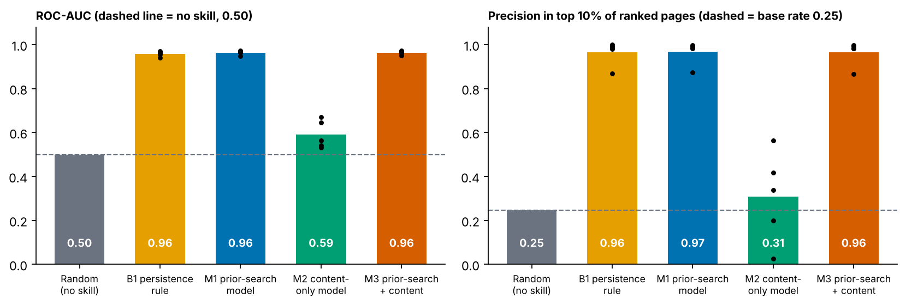
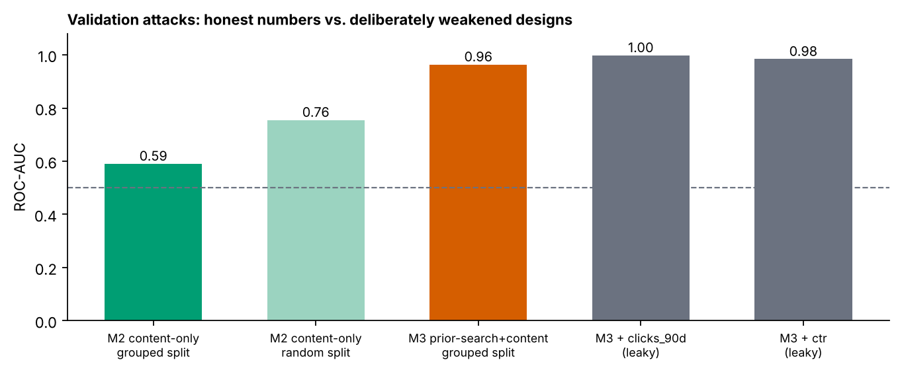
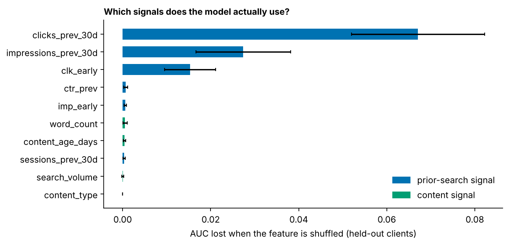
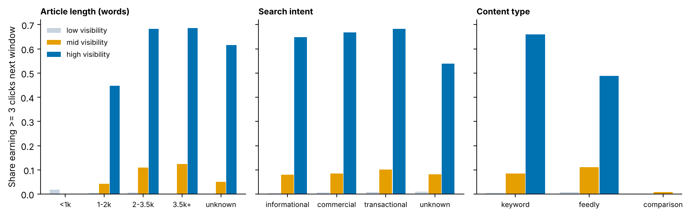

A leakage-safe signal analysis on anonymised search data (Ranking Signal Analysis)
Question. We asked which signals known before a 30-day window are associated with a page earning search clicks in that window, and whether content properties add anything beyond a page’s own recent search history.
Data. We used an anonymised slice of 26,612 visible pages from 31 clients (trailing 90 days) and labelled a page positive if it earned at least 3 clicks in the last 30 days (24.9% of pages).
Method. We compared a one-line persistence rule with gradient-boosting models built from prior-search signals, from content properties, or from both, using five-fold validation that holds out whole clients.
Result. Recent clicks and impressions did almost all the work (AUC 0.964 for the prior-search model vs 0.958 for the simple rule), while content properties alone ranked pages only slightly better than chance (AUC 0.59) and added nothing on top of search history (AUC difference -0.0001).
Use. The practical output is a decision-support rule: build review queues from recent clicks and treat content properties as hypotheses to test per client, not as ranking signals.
Picture an editor who looks after a few thousand articles and has time to review a few dozen this week. Which ones should go first? Many content teams reach for page properties: how long the article is, what the searcher is trying to do, how competitive the keyword looks. Others look at how the page has been performing lately.
This study tests that choice. For pages that were already visible in search, it asks which signals, known before a 30-day window, go with earning clicks in that window, and whether content properties add anything beyond a page’s own recent search history. The answer decides what belongs in a review queue and what does not. It describes associations in one portfolio of anonymised data. It does not say how Google ranks pages, and it does not say that editing a page will change its clicks.
Source. The anonymised FlyRank ML Internship starter slice: one row per page, trailing-90-day search and analytics metrics, 30,000 pages from 32 pseudonymised clients. It is a teaching slice, not the full warehouse (see Limitations). Page and client identifiers are pseudonyms and were used for grouping only.
Three non-overlapping windows were rebuilt from columns already in the file. The early window is the 90-day total minus the last two 30-day windows.
Who is included. Pages with at least one impression in the previous window: 26,612 pages from 31 clients. We excluded 3,388 pages with no previous-window impressions, because they have no search history to learn from (this includes brand-new pages). Rows per client range widely (median 473); the largest client holds 26.2% of the pages.
Label. A page is positive if it earned 3 or more search clicks in the last 30 days. The base rate is 24.9%. Because the threshold is a choice, we repeat the comparison at 1 click (43.1% positive) and at 10 clicks (11.5% positive).
Public-safe. No client names, domains, URLs, private queries or raw exports appear in this paper or the repository. Only aggregate numbers are shown.
A feature is allowed only if it was fully known before the label window began. Fourteen features meet that rule:
We excluded 33 columns on purpose: the label window itself; 90-day aggregates (CTR, average position, sessions, engagement and similar) that contain the label window; trend columns built from the label window; update-recency columns, whose timing is ambiguous; duplicates of kept columns; mostly-missing model-name columns; and the identifiers. The notebook prints the list and asserts that none of them is a feature.
B1, the baseline: rank pages by their own clicks in the previous window. It is a transparent rule with no training. M1, M2, M3: the same gradient-boosting classifier with fixed settings (no tuning) on prior-search signals only, content signals only, and both. Comparing M3 with M1 answers whether content adds anything.
A five-fold grouped split holds out whole clients, so every score is earned on clients the model never saw. All models and the baseline use the same folds. We report ROC-AUC, average precision and precision in the top 10% of ranked pages, always next to the base rate. One fold is a single large client, so fold-to-fold spread is real information, not noise to hide.
trend_direction, trend_pct and the last-30-day columns) is a feature.clicks_90d or ctr, which contain the label window, must push AUC toward 1.0. It does (0.998 and 0.984), so the test harness can see leakage.| Model | ROC-AUC | Average precision | Precision in top 10% | Lift at top 10% |
|---|---|---|---|---|
| No skill (reference) | 0.500 | 0.245 | 0.245 | 1.00x |
| B1 · persistence rule (rank by previous-window clicks) | 0.958 ± 0.011 | 0.903 ± 0.022 | 0.965 ± 0.055 | 4.36x |
| M1 · prior-search model | 0.964 ± 0.009 | 0.913 ± 0.023 | 0.967 ± 0.052 | 4.37x |
| M2 · content-only model | 0.590 ± 0.063 | 0.308 ± 0.114 | 0.309 ± 0.206 | 1.20x |
| M3 · prior-search + content model | 0.964 ± 0.009 | 0.911 ± 0.023 | 0.964 ± 0.056 | 4.35x |

Three results stand out. First, the simple rule is already strong: its top 10% of pages is 96.5% positive against a 24.5% base rate. Second, the prior-search model beats the rule by +0.0055 AUC on average, in 5 of 5 folds, a consistent but very small gain. Third, adding content properties changes nothing: M3 minus M1 is -0.0001 AUC on average and is positive in 3 of 5 folds, so there is no consistent gain.

Label thresholds do not change the picture:
| Label | Base rate | B1 | M1 | M2 | M3 |
|---|---|---|---|---|---|
| ≥ 1 click | 43.1% | 0.907 | 0.917 | 0.561 | 0.915 |
| ≥ 3 clicks | 24.9% | 0.958 | 0.964 | 0.590 | 0.964 |
| ≥ 10 clicks | 11.5% | 0.982 | 0.982 | 0.593 | 0.982 |
Mean grouped AUC by label threshold. The order B1 ≤ M1 ≈ M3 > M2 holds at every threshold.
Much of the headline score comes from the fact that big pages stay big. Two checks remove that. First, among pages visible in both windows (13,026 pages, 28 clients), we asked whether a page’s click-through rate in the last 30 days beats its own client’s median (a balanced 50/50 label):
| Model | ROC-AUC (5 held-out folds) |
|---|---|
| B1 · rank by previous-window CTR | 0.767 ± 0.023 |
| M1 · prior-search model | 0.800 ± 0.020 |
| M2 · content-only model | 0.550 ± 0.029 |
| M3 · prior-search + content | 0.797 ± 0.018 |
The story repeats: search history carries the signal (AUC 0.80), content alone is weak (0.55), and combining them gives 0.80.
Second, we split pages into three equal groups by previous-window impressions (low: 1–107, mid: 107–823, high: above 823) and scored out-of-fold predictions inside each group. Only 0.5% of low-visibility, 8.5% of mid and 65.8% of high-visibility pages earn 3 clicks:
| Visibility group | Pages | Base rate | B1 | M1 | M2 | M3 |
|---|---|---|---|---|---|---|
| low | 8,871 | 0.5% | 0.760 | 0.761 | 0.485 | 0.806 |
| mid | 8,870 | 8.5% | 0.834 | 0.833 | 0.582 | 0.851 |
| high | 8,871 | 65.8% | 0.897 | 0.901 | 0.540 | 0.899 |
In the mid group, where the outcome is least certain, content adds a small amount: the per-fold AUC gain of M3 over M1 is between -0.002 and +0.006 and positive in 4 of 5 folds. In the high group it does not help (1 of 5 folds positive). The low group has too few positive pages per fold (0.5% base rate) to say anything. We read the mid-group gain as directional only.
Shuffling features one at a time on held-out clients shows where the model gets its skill:

| Feature | Group | AUC lost when shuffled | Std. dev. over folds |
|---|---|---|---|
clicks_prev_30d | prior-search | 0.0671 | 0.0151 |
impressions_prev_30d | prior-search | 0.0274 | 0.0108 |
clk_early | prior-search | 0.0153 | 0.0058 |
ctr_prev | prior-search | 0.0007 | 0.0005 |
imp_early | prior-search | 0.0006 | 0.0003 |
word_count | content | 0.0005 | 0.0005 |
content_age_days | content | 0.0004 | 0.0003 |
sessions_prev_30d | prior-search | 0.0003 | 0.0003 |
Content signals can still be compared within the same visibility level. This is the fairest look at whether length, intent or type are associated with clicks once past performance is similar:

To separate real patterns from client mix, we compared pairs of content groups inside the mid and high visibility groups, then repeated the comparison within each client:
| Contrast (pages in mid and high visibility) | Pooled difference | Pages (A vs B) | Clients with the same sign | Median within-client difference |
|---|---|---|---|---|
| Longer articles (≥ 2,000 words) vs 1,000-1,999 words | +11.9 pp | 11,193 vs 1,404 | 3 of 4 | +1.9 pp |
| Transactional/commercial vs informational intent | +2.2 pp | 6,658 vs 10,769 | 9 of 14 | +1.6 pp |
| Keyword articles vs feedly articles | +1.6 pp | 17,423 vs 194 | 1 of 2 | +2.2 pp |
| Low vs high keyword competition | +2.4 pp | 14,812 vs 1,411 | 5 of 11 | -0.4 pp |
| Above vs below median search volume | -5.1 pp | 5,728 vs 11,688 | 7 of 14 | -1.5 pp |
The pooled gap for article length (+11.9 pp) shrinks to +1.9 pp inside clients, and only 4 clients can be compared. Much of the pooled gap therefore probably reflects which clients publish short articles rather than an effect of length. Intent shows a small, inconsistent lean. Competition and search volume show no consistent direction.
For context only, here is the same-window pattern between average position and click-through. It is descriptive and was not used for prediction, because position and CTR are 90-day aggregates that overlap the label window:
| Position tier (90-day average) | Pages | Median impressions | Pooled CTR |
|---|---|---|---|
| top 3 | 1,116 | 53 | 0.49% |
| page 1 | 11,814 | 1180 | 0.35% |
| striking | 7,304 | 874 | 0.35% |
| page 3 5 | 7,242 | 812 | 0.15% |
| deep | 1,319 | 218 | 0.04% |
CTR is level from page 1 to page 2 and then falls sharply on deeper pages. The top-3 row rests on few impressions per page (median 53), so its CTR is small-sample noise.
Everything above is an observed pattern in this data, a directional comparison where we say so, or decision-support for ordering a review queue. None of it is causal.
Ranked by how strong the evidence is and how directly it can be used. All are decision-support, not causal.
| # | Recommendation | Evidence in this data | Confidence |
|---|---|---|---|
| 1 | Build review queues from recent clicks and impressions first. | Previous-window clicks alone rank pages at AUC 0.958; the top 10% of that ranking is 96.5% positive against a 24.5% base rate (4.4x). | High (all 5 held-out folds agree) |
| 2 | Do not rank pages by content metadata alone (length, intent, type, keyword statistics). | Content-only model: AUC 0.59 (±0.06 across folds), precision in the top 10% of 31% vs a 24.5% base rate. A random split inflates it to 0.755, which points to client memorisation, not a portable signal. | High |
| 3 | Treat “does content add to prior history?” as mostly answered: no. | M3 minus M1 is -0.0001 AUC on average; shuffling all content signals together costs 0.0008 AUC versus 0.450 for the prior-search signals. | High |
| 4 | Test article length per client before acting on it. | Among visible pages, 2,000+ words vs 1,000–1,999 words is +11.9 pp pooled, but +1.9 pp as the median within clients, and only 4 clients have both groups. A hypothesis, not a rule. | Low |
| 5 | Treat search intent as a weak tie-breaker. | Transactional/commercial vs informational: +2.2 pp pooled, same direction in 9 of 14 clients, median +1.6 pp. | Low |
| 6 | Do not prioritise on keyword competition or search volume. | No consistent direction across clients (5 of 11 and 7 of 14 clients agree with the pooled sign). | Moderate |
| 7 | Get dated update history before judging freshness. | Update recency is measured at export and 65.6% of pages were updated within the last 30 days, so update timing cannot be separated from the label window. Use the warehouse daily table. | n/a |
How an editor would use this tomorrow: sort visible pages by previous-window clicks (then impressions), review the top of that list, and use content properties only to explain why a page on that list may deserve a closer look — never to decide which pages enter it. Then check article length per client as a hypothesis, using that client’s own pages.
data/raw/content_refresh_anonymized.csv from the repository, or from GitHub when run in Colab without the repo.work/figures/. No dataset rows are published.Built on the FlyRank ML Internship dataset. Thanks to the FlyRank team for the anonymised data and the internship track this work was done in.